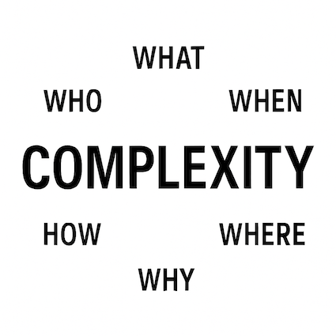
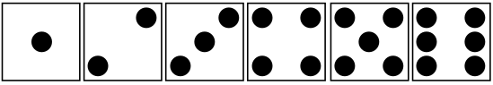
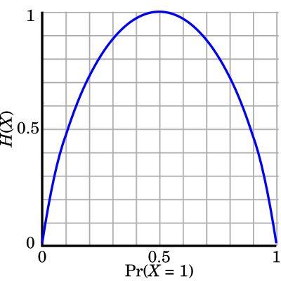
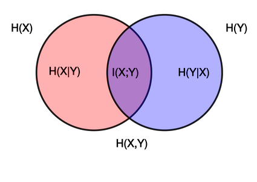
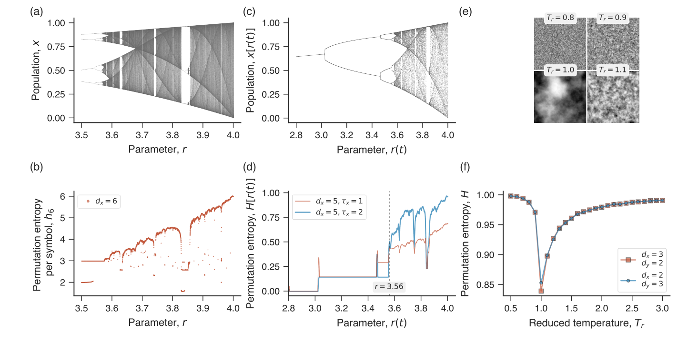
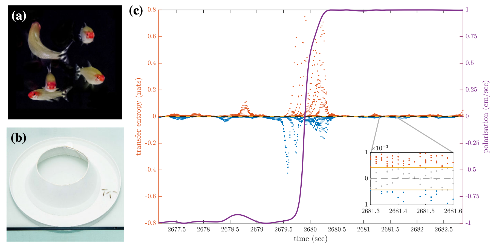
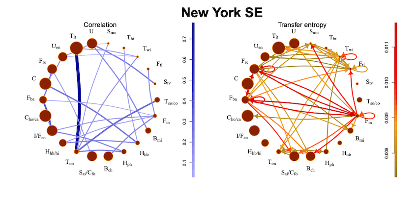

Week 9: Information Theory#

We will now come full circle to try understand one of the main questions that has run through everything we’ve covered since day one…
WHAT exactly is ‘complexity’?#
We are trying to answer this because we don’t have a precise definition of what a complex system is (new field finding its feet, multi-disciplinary with very large scope etc etc). All we really have is a list of properties that we require these systems to have (and even this isn’t conclusive as they aren’t all required all the time).
Before we tackle this question let’s answer some easier ones…
WHERE is ‘complexity’?#
By now, I hope that it is clear that complex systems are everywhere.
They appear in the natural world:
ecosystems, food webs, and climate,
the brain, immune system, and genetic regulation,
fractals and turbulence in physical systems.
They appear in human society:
economies and financial markets,
cities, transport, and communication networks,
cultural diffusion, cooperation, and conflict.
They appear in technology:
the internet, power grids, and social media,
artificial intelligence and multi-agent systems.
Complex systems are unpredictable. Wherever there are many interacting parts giving rise to emergent patterns, we find complexity.
WHY do we want to measure ‘complexity’?#
The defining scientific challenges of the 21st century — climate change, pandemics, disinformation, economic inequality — all share something in common. They are emergent problems of complex systems: unpredictable outcomes from countless interactions among individuals, institutions, and technologies.
Complex systems often display behaviours like synchronisation, critical phase changes, cascading failures, heavy-tailed events, and self-organisation. We already have tools to model such behaviour and now seek to better quantify it.
By measuring complexity we can move beyond description to characterise and compare systems:
compare systems or models: judge whether one is “more complex” than another; useful for testing alternatives or contrasting natural vs. artificial systems.
track behaviour and transitions: complexity changes over time and signals shifts from order to chaos or tipping points.
ecosystems: rising complexity may signal diversification; collapse shows loss of complexity.
physics/ABMs: changes in correlation length or entropy may reveal criticality.
evaluate model fidelity: does the model capture the richness of real dynamics, not just averages?
quantify information content: how much information is encoded in structure or dynamics (this week’s focus).
aid prediction and control: between simplicity and randomness lies the “edge of chaos” where adaptation and learning are possible.
communicate across disciplines: complexity measures offer a common language across biology, physics, sociology, economics, and beyond.
HOW do we measure ‘complexity’?#
How do we give a climate scientist and a sociologist, or a neuroscientist and an economist, a common language so that they can compare complexity across disciplines?
We have already seen one measure of complexity…
Fractal dimension.
A larger fractal dimension means the object fills space more densely, capturing self-similarity across scales. e.g.:
the Koch curve has fractal dimension \(\approx 1.26\): more complex than a straight line (dimension 1) but far from filling a plane.
the Peano curve has fractal dimension 2, fully covering the plane.
We have also used order parameters (e.g. magnetisation/alignment in the Ising/Vicsek model, synchronisation in Kuramoto oscillators). While not always labelled as complexity measures, they serve a similar purpose: reducing high-dimensional behaviour to a single number that tracks emergent organisation.
These measures are valuable but limited. We need something that can capture not just structure or organisation, but also the unpredictability and variability of system behaviour.
WHO and WHEN: a brief origin story#
Information theory was born in 1948, when Claude Shannon, working at Bell Labs, tackled a practical engineering problem: How can a message be transmitted reliably over a noisy channel?

From this question, Shannon developed the mathematics of information: how to quantify, encode, and transmit it efficiently. His framework laid the foundation for digital communication, computing, and data science, and has been described as “on par with electricity or the internal combustion engine in terms of impact.”
Although Shannon’s immediate focus was telegraphs and phone lines, his theory of measuring uncertainty, structure, and order proved far more general. It has since influenced physics, biology, mathematics, computer science, and philosophy.
Today, information theory underpins applications such as:
how your phone compresses photos,
quantifying genetic information in DNA,
measuring correlations in neural networks,
detecting critical transitions in ecosystems,
modelling the spread of ideas and disinformation in society.
Information theory is a toolkit to quantify complexity itself.
We will look extensively at entropy as the key measure.
Entropy: measures uncertainty and disorder in a system.
And then consider some variants:
Joint entropy: quantifies the total uncertainty of two (or more) variables taken together.
Conditional entropy: measures the remaining uncertainty in one variable given knowledge of another.
Mutual information: reveals hidden dependencies, capturing how much knowing one variable reduces uncertainty about another.
These quantities are universal. They apply whether we’re analysing spins in the Ising model, birds in a flock, or rumours on social media.
To summarise the roadmap for this topic:
We need a way to quantify uncertainty in outcomes of complex systems.
information reduces it,
entropy quantifies it,
and the variants let us capture relationships.
Information#
Information is what reduces our uncertainty when data is revealed.
To Shannon, “information” referred to signals transmitted through a channel.
Intuitively, information measures how much our uncertainty is reduced when new data becomes available.
The problem of transmitting a message is just one special case of this general framework. The same mathematics applies whenever we seek to reduce uncertainty about an unknown variable, such as:
tracking information flow,
predicting the future state of a system,
measuring coupling between variables,
quantifying unpredictability.
This is why information theory provides a natural framework for studying complex systems.
A really important point is that ‘information’ is agnostic to the question of the “meaning” of a message.
Information: a measure of the reduction in uncertainty about a system or event when a signal is received.
Meaning: involves interpretation and context, which are subjective and vary depending on the receiver.
i.e. We aren’t interested in what the information represents - only that we have inferred the correct message from some space of possible messages.
e.g. Consider the message:
In the context of Information Theory, this sentence is just a sequence of characters.
We care about:
how many bits are needed to transmit the message?
what is the likelihood of errors in transmission?
how efficiently can the message be encoded and decoded?
We don’t care about:
what “sky” or “blue” mean
that this sentence conveys something about the weather
These meanings arise in the mind of the receiver and involve interpretation, which is outside the scope of Information Theory.
Information Theory would treat both “The sky is blue” and some random characters “ajksd873##@” in much the same way: as strings of characters.
The focus is on the quantity of information rather than its content or interpretation. In fact, the random string is considered as having more information content because it is less predictable.
At its core, it is the mathematics of inference (encoding, decoding, probability, and statistics) especially under conditions of uncertainty.
Shannon’s key insight was that messages aren’t random strings though. Some symbols/words are more probable than others. e.g.:
In English text, E is much more likely than Z.
The digram TH is far more likely than XZ.
Whole words like “the” occur with very high frequency.
So instead of assuming equal probabilities (each symbol would carry \(\log_2 27 \approx 4.75\) bits), he measured (or estimated) them from language statistics.
The actual entropy rate is only \(\approx 1–1.5\) bits/letter. This “gap” is redundancy in language, which is why compression and error correction are possible.
Entropy#
Because information is the reduction of uncertainty associated with observing data, we must first understand uncertainty.
This is done with entropy: a mathematical function that quantifies how uncertain we are (on average) about the state of some variable before any message is received.
There are many ways to define entropy; we will focus on the perspective of entropy as expected surprise.
Note that we are not discussing entropy from physics/thermodynamics, which you are likely familiar with.
Both measure the logarithm of possible states — but our emphasis is on information and complexity, not heat and energy.
Entropy as expected surprise#
Some events are more surprising than others.
How surprised you are depends on how unlikely the event was.
Consider a fair die:
each face has probability of 1/6
no outcome is more surprising than another (if you were gambling on the die: no reason to pick any face over another)

Now consider a loaded die:
suppose 2 comes up 2/3 of the time, all other faces come up with probability 1/15
knowing this probability distribution ahead of time, you will be less surprised to see a 2 come up than you would be to see a 5 come up.
So how do we quantify surprise?
We want a function for the surprise of an event \(h(x)\), that satisfies:
more probable events are less surprising (\(h(x)\propto 1/P(x)\))
surprise is never be negative
independent events are additive (\(h(x_1,x_2)=h(x_1)+h(x_2)\))
surprise varies continuously
guaranteed events are unsurprising: \(P(x) = 1 \implies h(x) = 0\)
impossible events are infinitely surprising: \(P(x)=0 \implies h(x)=\infty\).
The unique function meeting these criteria is:
This is called surprise, self-information or the local entropy.
Having defined the surprise of a single outcome, we now ask: What is the average surprise if we observe the system many times?
To answer this, we take the expected value of surprise across all possible outcomes.
This is the Shannon entropy.
Recall: Expected value#
The expected value of a random variable is computed by taking the sum of all possible outcomes, each weighted by its probability
For a discrete random variable \(X\), the expected value \(\mathbb{E}[X]\) is given by:
where:
\(p(x)\) is the probability of outcome \(x\)
\(x\) is the value of the outcome.
Shannon Entropy, \(H(X)\)#
Formally, entropy is the expected surprise over all outcomes:
Key ideas:
rare events are very surprising but we aren’t that surprised very often
frequent events are unsurprising, so we spend a lot of time not being very surprised.
entropy balances these, giving the average uncertainty.
Note that by convention we say that \(0 \log(0) = 0\), so impossible events have no impact on our uncertainty.
Shannon entropy is the fundamental building block of Information Theory.
So which dice - the fair or the loaded one - has a higher entropy?
Fair die: is maximally uncertain — all outcomes equally likely.
Loaded die (\(P(2)=\tfrac{2}{3},\; P(\text{others})=\tfrac{1}{15}\)): is more predictable (most of the time it’s “2”), so the average uncertainty is lower
Does rolling a die or tossing a coin have a higher entropy?
Rolling a die has higher entropy than tossing a coin.
Each outcome of a die toss has smaller probability (\(p=1/6\)) than each outcome of a coin toss ($p=1/2).
You might like to keep this picture for a fair coin toss in mind:
For a Bernoulli random variable with probabilities \(p\) and \(1-p\):

Note that \(-x \log x\) (single-term contribution) is asymmetric, peaks at \(1/e\).
In general entropy is a high-dimensional surface that lives on the probability simplex, which is the set of all valid probability distributions.
Details:
For a system with \(k\) possible outcomes, we describe it with probabilities
For a coin (\(k=2\)): the simplex is 1D (a line segment from \((1,0)\) to \((0,1)\)) (the parabola-like binary entropy).
For a die (\(k=6\)): the simplex is 5D.
Entropy is defined by all \(k\) probabilities together.:
This is a surface defined over the simplex.
At one corner of the simplex (all probability on a single outcome), entropy = 0.
At the centre of the simplex (all probabilities equal), entropy = \(\log k\), the maximum.
Examples#
Consider some known distributions…
Let \(X\) be a normally distributed random variable, \(X \sim N(\mu, \sigma^2)\), with probability density function (PDF) \(f(x) = \frac{1}{\sqrt{2 \pi \sigma^2}} \exp\left(-\frac{(x - \mu)^2}{2\sigma^2}\right)\)
The first term (the constant \(\frac{1}{2} \log(2 \pi \sigma^2) \)) comes out of the integral and integrates to 1, and the second term integrates to give \(\sigma^2 \). The result is:
Thus, the entropy of a normal distribution depends on the variance \(\sigma^2 \). The larger the variance, the more spread out the distribution, and thus the higher the entropy.
Let \(X\) be an exponentially distributed random variable, \(X \sim \text{Exp}(\lambda) \) with probability density function (PDF), \(f(x) = \lambda \exp(-\lambda x) \quad \text{for} \, x \geq 0\)
The first integral evaluates to 1, and the second integral evaluates to \(\frac{1}{\lambda}\). Hence,
Thus, the entropy of an exponential distribution depends on the rate parameter \(\lambda\). The smaller the rate, the more spread out the distribution, and thus the higher the entropy.
Comparing#
The normal distribution’s entropy grows with the variance \(\sigma^2\), while the exponential distribution’s entropy is inversely related to the rate \(\lambda\)
For comparable scales (a similar spread/variance):
Normal distribution \(N(\mu, \sigma^2)\):
\(H_{\text{normal}} = \frac{1}{2} \log(2 \pi e \sigma^2)\)
defined over the entire real line and spreads out more
generally has higher entropy
Exponential distribution \(\text{Exp}(\lambda)\):
(Recall that the variance of the exponential distribution is \(\frac{1}{\lambda^2}\).)
\(H_{\text{exponential}} = 1 - \log(\lambda)\)
despite its unbounded support, concentrates more heavily near 0 and decays rapidly
generally has lower entropy
Order the behavioural regimes of a Couzin model in terms of their entropy.
We need to be clear about what variable the entropy is over.
If we measure entropy of heading angles at a snapshot \(H(\Theta)\):
Highest: Random (uniform over \([0,2\pi)\)) and also rotational milling (headings wrap uniformly around the ring)
Middle: Dynamic polarised (unimodal but broad around a mean)
Lowest: Highly polarised order (tight spike around one direction)
To capture the difference between the random state and the ordered milling we would need to also consider the spatial structure, say with \(H(X, \Theta)\). Or perhaps we could instead consider something like relative angles locally?
Summarising#
The question we set out to answer was “WHAT is complexity”
We have answered a different question: How uncertain is the system.
Absolute meaning#
Entropy is measured in bits (or nats), and it tells you:
the average surprise per symbol, or
the average number of yes/no questions needed to identify an outcome.
So if you calculate \(H(X) = 2.59\) bits for a fair die, that literally means: on average, you need \(\approx 2.59\) binary questions to specify the face.
Relative meaning#
On its own, the magnitude of entropy is less useful unless you compare it to something, like:
Maximum entropy: For \(k\) equally likely outcomes, the maximum possible entropy is \(\log_2 k\).
Normalisation: You often look at entropy relative to this maximum (so you can say a distribution is “60% of maximum uncertainty”).
Comparisons across systems: Entropy lets you compare two models, two distributions or even to the same system under different conditions, in a principled way.
Interpretation in practice#
low \(H\): outcomes are predictable, the system has order.
high \(H\): outcomes are uncertain, the system is closer to randomness.
If you just quote “\(H=1.7\) bits,” the number alone is meaningless unless you also know: “out of how many possible outcomes?”
Entropy gives us a rigorous measure of uncertainty — the average surprise in outcomes — but that is not the same as a measure of complexity. Instead, it provides the toolkit we need to measure the uncertainty, dependencies, and information flows that underlie complex behaviour.
And so unfortunately we don’t have a value for complexity.
By extending entropy to compare variables (through conditional entropy, joint entropy, and mutual information) we can begin to capture relationships and structure that move us closer to the idea of complexity…
These are essential ingredients of complex systems: emergence, adaptation, and interaction all hinge on flows of information and uncertainty.
Joint entropy, \(H(X,Y)\)#
Measures the total uncertainty in two random variables considered together.
Reflects the uncertainty of each variables and their interactions.
Useful for understanding interdependencies: higher dependence means lower joint entropy (relative to the independent case).
Formally defined as the union of both marginal entropies:
Joint and marginal entropies are generally related by: $\( H(X,Y)\leq H(X)+H(Y) \)$ with equality if and only if the variables are independent.
Conditional entropy, \(H(X|Y)\)#
Quantifies how much uncertainty remains in \(X\) once the state of \(Y\) is known.
Formally:
Note that we have broken away from the familiar “\(p\log p\)” formula here and the expectation is taken with respect to the joint distribution \(P(x,y)\), since both variables contribute to the average uncertainty. Specifically:
the log term uses the conditional probability \(P(x|y)\), because we’re asking about the distribution of \(X\) given \(Y\).
but the weights in the sum must still reflect how often each \((x,y)\) pair actually occurs and so the expectation is taken with respect to the joint distribution \(P(x,y)\).
(if we only summed over \(P(x|y)\), we’d be treating all values of \(y\) as equally likely. The joint distribution \(P(x,y)\) ensures the average is weighted correctly by how often each conditioning case occurs.)
For a particular, fixed state \(y\):
which measures the uncertainty in \(X\) when \(Y=y\) is known.
Mutual information, \(I(X; Y)\)#
A measure of statistical dependency between two random variables.
Answers: how much does knowing \(X\) reduce uncertainty about \(Y\) (and vice versa)?
Formally:
Key properties:
\(I(X;Y) = 0\): \(X\) and \(Y\) are independent (knowing one tells you nothing about the other).
\(I(X;Y)\) is always non-negative.
Maximum \(I(X;Y)\) occurs when one variable completely determines the other, in which case:
Recall:
\(P(x), P(y)\) are the marginal probabilities of \(X\) and \(Y\) respectively
\(P(x,y)\) is the joint probability distribution: the probability that variable \(X\) takes value \(x\) and variable \(Y\) takes value \(y\) simultaneously.
\(P(x|y)\) is the conditional probability of \(X=x\) given that \(Y=y\).
Many others too#
e.g. Relative entropy (Kullback-Liebler divergence)
…
We won’t get into the details here but you may come across them when researching for your Project and are welcome to use (or invent) any sensible information measure.
Putting it all together#

The area of each circle corresponds to the amount of uncertainty we have about the state of each variable (not the amount of information we have, which is a common misinterpretation).
(And these relationships generalise for more variables.)
Hence we can think about mutual information in terms of the aforementioned entropies:
Applications#
So far, our examples (like dice) assumed we knew the outcome probabilities in advance. In practice, we often do not — but information-theoretic quantities can still be computed directly from data.
Entropy has the general form:
so once we can estimate the probabilities \(p\) from observations, we can calculate entropy and related measures.
Time series analysis#
Examples in time-series analysis include:
Permutation entropy: quantifies the diversity of ordinal patterns in a sequence.
Transfer entropy: captures directional information flow between time series.
Note that these extensions are not assessable in the Tests but are included as an example of how you might extend these ideas for your project.
Permutation Entropy#
Captures permutation patterns from a scalar time series measured from a complex system by organising windows of the time series with length \(n\), according to their relative values forming the symbol \(\pi_i\):.
Formally:
The simple example provided by Bandt and Pompe…
For \(x=(4,7,9,10,6,11,3)\) and \(n=2\)
we find find four pairs for which \(x_{t+1}>x_{t}\) and two pairs for which \(x_{t+1}<x_{t}\), i.e.
4/6 pairs are represented by the permutation 01 (an increase)
2/6 are represented by 10 (a decrease)
permutation entropy (a measure of the probabilities of the permutations 01 and 10):
Everything you wanted to know about permutation entropy (and ordinal methods) is here

Image from Ordpy package intro here.
Transfer Entropy#
Based on conditional mutual information \(I(X; Y |Z)\) of the variables \(X\), \(Y\) given the variable \(Z\):
Schreiber introduced transfer entropy in 2000 as a means to detect asymmetries in interaction of two coupled dynamical systems from their time series.
It measures how much knowledge of the present state of \(X\) reduces uncertainty about the future of \(Y\), beyond what is already explained by \(Y\)’s own past:
Formally:
In the context of animal interactions, \(X\) and \(Y\) will measure the behavior of two individuals and transfer entropy will be constructed based on raw time series extracted from behavioral observations or trajectory tracking:

Image from here
Transfer entropy here provides insights into the phase transition. At the critical point, the transfer entropy exhibits unique behaviour, indicating a shift in the complexity of the system.
In the context of financial markets Korbel et al. analysed information flow between various market communities. They focussed on information transfer of rare events (typically large drops which can spread in the network):

Image from here
Data in general#
Not all entropy-based extensions are tied to time series. Many are designed for static data, distributions or networks.
Fundamentally though, the process is the same:
Define/extract a probability distribution
Compute \(-\sum p\log p\) or a suitable variant of it